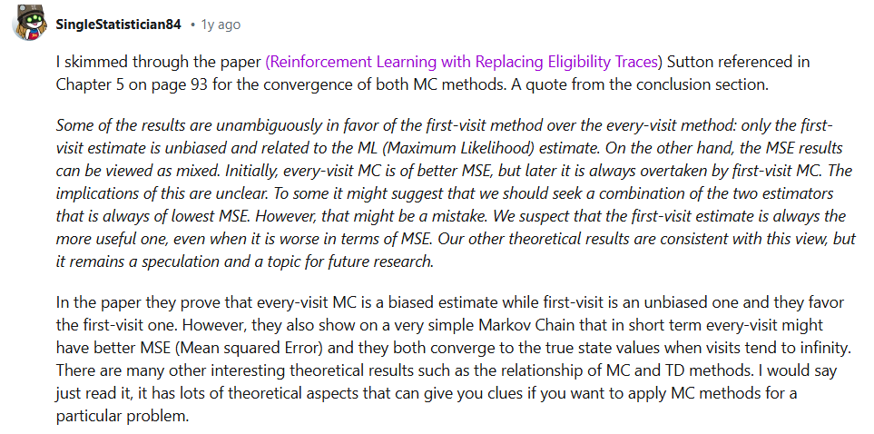

Monte Carlo Methods

Optimal policy and state-value function in blackjack (Sutton and Barto, 2017)
MC Prediction: State Values
- Algorithms that solve the prediction problem determine the value function v_\pi (or q_\pi) corresponding to a policy \pi.
- Methods that evaluate a policy \pi from interaction with the environment fall under one of two categories:
- On-policy methods have the agent interact with the environment by following the same policy \pi that it seeks to evaluate (or improve).
- Off-policy methods have the agent interact with the environment by following a policy b (where b\neq\pi) that is different from the policy that it seeks to evaluate (or improve).
- Each occurrence of state s\in\mathcal{S} in an episode is called a visit to s.
- There are two types of Monte Carlo (MC) prediction methods (for estimating v_\pi):
- First-visit MC estimates v_\pi(s) as the average of the returns following only first visits to s (that is, it ignores returns that are associated to later visits).
- Every-visit MC estimates v_\pi(s) as the average of the returns following all visits to s.


If you are interested in learning more about the difference between first-visit and every-visit MC methods, you are encouraged to read Section 3 of [this paper]
Their results are summarized in Section 3.6. The authors showed:
- Every-visit MC is biased, whereas first-visit MC is unbiased (see Theorems 6 and 7).
- Initially, every-visit MC has lower mean squared error (MSE), but as more episodes are collected, first-visit MC attains better MSE (see Corollary 9a and 10a, and Figure 4).
Both the first-visit and every-visit method are guaranteed to converge to the true value function, as the number of visits to each state approaches infinity. (So, in other words, as long as the agent gets enough experience with each state, the value function estimate will be pretty close to the true value.) In the case of first-visit MC, convergence follows from the Law of Large Numbers, and the details are covered in section 5.1 of the textbook.
MC Prediction: Action Values
In the Dynamic Programming case, we used the state value function to obtain an action value function, as given below:q_\pi(s,a) = \sum_{s'\in\mathcal{S}, r\in\mathcal{R}}p(s',r|s,a)(r+\gamma v_\pi(s'))
Can we follow the same procedure here (in Monte Carlo case)?
Unfortunately, no! Remember, p(s',r|s,a) encodes the one-step dynamics of the environement. This was known to the agent in the DP setting but in the RL setting, the agent doesn't know these dynamics. So, we can't apply above equation as before. Instead to get the action values, we would make a small modification to the prediction algorithm.
- Each occurrence of the state-action pair s,a (s\in\mathcal{S},a\in\mathcal{A}) in an episode is called a visit to s,a.
- There are two types of MC prediction methods (for estimating q_\pi):
- First-visit MC estimates q_\pi(s,a) as the average of the returns following only first visits to s,a (that is, it ignores returns that are associated to later visits).
- Every-visit MC estimates q_\pi(s,a) as the average of the returns following all visits to s,a.

Both the first-visit and every-visit methods are guaranteed to converge to the true value function, as the number of visits to each state-action pair approaches infinity. (So, in other words, as long as the agent gets enough experience with each state-action pair, the value function estimate will be pretty close to the true value.)
We won't use MC prediction to estimate the action-values corresponding to a deterministic policy; this is because many state-action pairs will never be visited (since a deterministic policy always chooses the same action from each state). Instead, so that convergence is guaranteed, we will only estimate action-value functions corresponding to policies where each action has a non-zero probability of being selected from each state.
Generalized Policy Iteration
- Algorithms designed to solve the control problem determine the optimal policy \pi_* from interaction with the environment.
- Generalized policy iteration (GPI) refers to the general method of using alternating rounds of policy evaluation and improvement in the search for an optimal policy. (All of the reinforcement learning algorithms we examine in this course can be classified as GPI)
MC Control: Incremental Mean
- In this concept, we derived an algorithm that keeps a running average of a sequence of numbers.
In this, we learned about an algorithm that can keep a running estimate of the mean of a sequence of numbers (x_1, x_2, \ldots, x_n). The algorithm looked at each number in the sequence in order, and successively updated the mean \mu.
MC Control: Policy Evaluation
- In this concept, we amended the policy evaluation step to update the value function after every episode of interaction.
MC Control: Policy Improvement
- A policy is greedy with respect to an action-value function estimate Q if for every state s\in\mathcal{S}, it is guaranteed to select an action a\in\mathcal{A}(s) such that a = \arg\max_{a\in\mathcal{A}(s)}Q(s,a). (It is common to refer to the selected action as the greedy action.)
- A policy is \epsilon-greedy with respect to an action-value function estimate Q if for every state s\in\mathcal{S},
- with probability 1-\epsilon, the agent selects the greedy action, and
- with probability \epsilon, the agent selects an action (uniformly) at random.
Say we are an agent and we have two door infront of us, we need to decide which has more value. At the beginning we have no reason to favour any door over the other, so let's say we initialize the estimate for the value of each door to 0. And, in order to figure out which door to open, let's flip a coin and it comes up tail, so we open door B. When we do that we receive a reward of 0. Let's say for simplicity that an episode finishes after single door is open. In other words, after opening door B, we receive a return of 0. That doesn't change the estimate of the value function, so it makes sense to pick a door randomly again. So we flip a coin, it comes head this time and we open door A. When we do this, we get a reward of 1. This update the estimate for the value of door A to 1. Now if we act greedily with respect to the value function, then we open door A again. Say this time we get a reward of 3. This updates the value of door A to 2. So, at the next point in time, the greedy policy picked door A again. Say everytime we do that we get some positive rewards and it's always either 1 or 3. So for all time we are opening the same door. There is a big problem with this. We never got chance to truly explore what's behind the second door. For instance, consider the case that the mechanism behind the door A is what you would expect - it yields a reward of 1 or 3 where both are equally likely. But, the mechanism behind door B gives 0 or 100, this information we would have liked to discover but following the greedy policy has prevented us. So the point is we may got to a situation early in our investigation where door A seemed more favourable than door B, we really need more time to making sure of that because our early preceptions were incorrect.
So, instead of constructing that greedy policy, a better policy would have been a stochastic one that picked door A with 95% probability and door B with 5% probability (let's say). And that still pretty close to the greedy policy - so we are acting pretty optimally. But there is an added value that if we continued to select door B with some small probability, then at some point we are going to see that return of 100.
Above example motivates how we will define the Monte Carlo version of policy improvement.
Instead of always constructing a greedy policy, what we will do instead is construct a stochastic policy that's most likely to pick the greedy action but with a small and non-zero probability picks one of the non-greedy actions instead.
In this case, we will set some small positive number Є, where the larger it is the more likely we are to pick one of the non-greedy actions. We call this an Epsilon-Greedy policy.
As long as the Є is set to a small number, we have a method for constructing a policy that is very close to the greedy policy with the added benefit that it doesn't prevent the agent from continuing to explore the range of posibilities.
- Є = 0 yields an epsilon-greedy policy that is guaranteed to always select the greedy action.
- The values for epsilon yields an epsilon-greedy policy where the agent has the possibility of selecting a greedy action, but might select a non-greedy action instead. In other words, how might you guarantee that the agent selects
each of the available (greedy and non-greedy) actions with nonzero probability.
- Є = 0.3
- Є = 0.5
- Є = 1.0
- Є = 1 yields an epsilon-greedy policy that is equivalent to the equiprobable random policy (where, from each state, each action is equally likely to be selected).
You can think of the agent who follows an \epsilon-greedy policy as always having a (potentially unfair) coin at its disposal, with probability \epsilon of landing heads. After observing a state, the agent flips the coin.
- If the coin lands tails (so, with probability 1-\epsilon), the agent selects the greedy action.
- If the coin lands heads (so, with probability \epsilon), the agent selects an action uniformly at random from the set of available (non-greedy AND greedy) actions.
In order to construct a policy \pi that is \epsilon-greedy with respect to the current action-value function estimate Q, we need only set

for each s\in\mathcal{S} and a\in\mathcal{A}(s). Note that \epsilon must always be a value between 0 and 1, inclusive (that is, \epsilon \in [0,1]).
Exploration vs. Exploitation
- All reinforcement learning agents face the Exploration-Exploitation Dilemma, where they must find a way to balance the drive to behave optimally based on their current knowledge (exploitation) and the need to acquire knowledge to attain better judgment (exploration).
- In order for MC control to converge to the optimal policy, the Greedy in the Limit with Infinite Exploration (GLIE) conditions must be met:
- every state-action pair s, a (for all s\in\mathcal{S} and a\in\mathcal{A}(s)) is visited infinitely many times, and
- the policy converges to a policy that is greedy with respect to the action-value function estimate Q.

Recall that the environment's dynamics are initially unknown to the agent. Towards maximizing return, the agent must learn about the environment through interaction.
At every time step, when the agent selects an action, it bases its decision on past experience with the environment. And, towards minimizing the number of episodes needed to solve environments in OpenAI Gym, our first instinct could be to devise a strategy where the agent always selects the action that it believes (based on its past experience) will maximize return. With this in mind, the agent could follow the policy that is greedy with respect to the action-value function estimate. We examined this approach in previous section and saw that it can easily lead to convergence to a sub-optimal policy.
To see why this is the case, note that in early episodes, the agent's knowledge is quite limited (and potentially flawed). So, it is highly likely that actions estimated to be non-greedy by the agent are in fact better than the estimated greedy action.
With this in mind, a successful RL agent cannot act greedily at every time step (that is, it cannot always exploit its knowledge); instead, in order to discover the optimal policy, it has to continue to refine the estimated return for all state-action pairs (in other words, it has to continue to explore the range of possibilities by visiting every state-action pair). That said, the agent should always act somewhat greedily, towards its goal of maximizing return as quickly as possible. This motivated the idea of an \epsilon-greedy policy.
We refer to the need to balance these two competing requirements as the Exploration-Exploitation Dilemma. One potential solution to this dilemma is implemented by gradually modifying the value of \epsilon when constructing \epsilon-greedy policies.
Setting the Value of \epsilon, in Theory
It makes sense for the agent to begin its interaction with the environment by favoring exploration over exploitation. After all, when the agent knows relatively little about the environment's dynamics, it should distrust its limited knowledge and explore, or try out various strategies for maximizing return. With this in mind, the best starting policy is the equiprobable random policy, as it is equally likely to explore all possible actions from each state. You discovered in the previous quiz that setting \epsilon = 1 yields an \epsilon-greedy policy that is equivalent to the equiprobable random policy.
At later time steps, it makes sense to favor exploitation over exploration, where the policy gradually becomes more greedy with respect to the action-value function estimate. After all, the more the agent interacts with the environment, the more it can trust its estimated action-value function. You discovered in the previous quiz that setting \epsilon = 0 yields the greedy policy (or, the policy that most favors exploitation over exploration).
Thankfully, this strategy (of initially favoring exploration over exploitation, and then gradually preferring exploitation over exploration) can be demonstrated to be optimal.
Greedy in the Limit with Infinite Exploration (GLIE)
In order to guarantee that MC control converges to the optimal policy \pi_*, we need to ensure that two conditions are met. We refer to these conditions as Greedy in the Limit with Infinite Exploration (GLIE). In particular, if:
- every state-action pair s, a (for all s\in\mathcal{S} and a\in\mathcal{A}(s)) is visited infinitely many times, and
- the policy converges to a policy that is greedy with respect to the action-value function estimate Q,
then MC control is guaranteed to converge to the optimal policy (in the limit as the algorithm is run for infinitely many episodes). These conditions ensure that:
- the agent continues to explore for all time steps, and
- the agent gradually exploits more (and explores less).
One way to satisfy these conditions is to modify the value of \epsilon when specifying an \epsilon-greedy policy. In particular, let \epsilon_i correspond to the i-th time step. Then, both of these conditions are met if:
- \epsilon_i > 0 for all time steps i, and
- \epsilon_i decays to zero in the limit as the time step i approaches infinity (that is, \lim_{i\to\infty} \epsilon_i = 0).
For example, to ensure convergence to the optimal policy, we could set \epsilon_i = \frac{1}{i}. (You are encouraged to verify that \epsilon_i > 0 for all i, and \lim_{i\to\infty} \epsilon_i = 0.)
Setting the Value of \epsilon, in Practice
As you read in the above section, in order to guarantee convergence, we must let \epsilon_i decay in accordance with the GLIE conditions. But sometimes "guaranteed convergence" isn't good enough in practice, since this really doesn't tell you how long you have to wait! It is possible that you could need trillions of episodes to recover the optimal policy, for instance, and the "guaranteed convergence" would still be accurate!
Even though convergence is not guaranteed by the mathematics, you can often get better results by either:
- using fixed \epsilon, or
- letting \epsilon_i decay to a small positive number, like 0.1.
This is because one has to be very careful with setting the decay rate for \epsilon; letting it get too small too fast can be disastrous. If you get late in training and \epsilon is really small, you pretty much want the agent to have already converged to the optimal policy, as it will take way too long otherwise for it to test out new actions!
As a famous example in practice, you can read more about how the value of \epsilon was set in the famous DQN algorithm by reading the Methods section of the research paper:
The behavior policy during training was epsilon-greedy with epsilon annealed linearly from 1.0 to 0.1 over the first million frames, and fixed at 0.1 thereafter.
MC Control: Constant-alpha
- (In this concept, we derived the algorithm for constant-\alpha MC control, which uses a constant step-size parameter \alpha.)
- The step-size parameter \alpha must satisfy 0 < \alpha \leq 1. Higher values of \alpha will result in faster learning, but values of \alpha that are too high can prevent MC control from converging to \pi_*.
In Incremental Mean, we have seen an algorithm that maintains a running estimate of the mean of a sequence of numbers (x_1, x_2, \ldots, x_n).

When we adapted Incremental Mean algorithm (an algorithm that maintains a running estimate of the mean of a sequence of numbers (x_1, x_2, \ldots, x_n)) for Monte Carlo control in the following concept (MC Control: Policy Evaluation), the sequence (x_1, x_2, \ldots, x_n) corresponded to returns obtained after visiting the same state-action pair.
That said, the sampled returns (for the same state-action pair) likely corresponds to many different policies. This is because the control algorithm proceeds as a sequence of alternating evaluation and improvement steps, where the policy is improved after every episode of interaction. In particular, we discussed that returns sampled at later time steps likely correspond to policies that are more optimal.
With this in mind, it made sense to amend the policy evaluation step to instead use a constant step size, which we denoted by \alpha. This ensures that the agent primarily considers the most recently sampled returns when estimating the action-values and gradually forgets about returns in the distant past.
The analogous pseudocode (for taking a forgetful mean of a sequence (x_1, x_2, \ldots, x_n)) can be found below.

Setting the Value of \alpha
You can find the associated pseudocode below.

How to set the value of \alpha when implementing constant-\alpha MC control?
-
You should always set the value for \alpha to a number greater than zero and less than (or equal to) one.
- If \alpha=0, then the action-value function estimate is never updated by the agent.
- If \alpha = 1, then the final value estimate for each state-action pair is always equal to the last return that was experienced by the agent (after visiting the pair).
-
Smaller values for \alpha encourage the agent to consider a longer history of returns when calculating the action-value function estimate. Increasing the value of \alpha ensures that the agent focuses more on the most recently sampled returns.
Note that it is also possible to verify the above facts by slightly rewriting the update step as follows:
Q(S_t,A_t) \leftarrow (1-\alpha)Q(S_t,A_t) + \alpha G_t
where it is now more obvious that \alpha controls how much the agent trusts the most recent return G_t over the estimate Q(S_t,A_t) constructed by considering all past returns.
IMPORTANT NOTE: It is important to mention that when implementing constant-\alpha MC control, you must be careful to not set the value of \alpha too close to 1. This is because very large values can keep the algorithm from converging to the optimal policy \pi_*. However, you must also be careful to not set the value of \alpha too low, as this can result in an agent who learns too slowly. The best value of \alpha for your implementation will greatly depend on your environment and is best gauged through trial-and-error.
The pseudocode for (first-visit) constant-\alpha MC control can be found below. (Feel free to implement either the first-visit or every-visit MC method. In the game of Blackjack, both the first-visit and every-visit methods return identical results.)